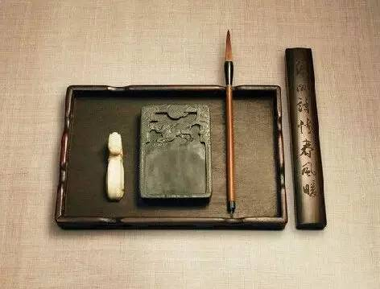

看我无情对，让你没话说
 175
175
在浩如瀚海的“对联一族”中，有一种“无情对”。此种对联，上下联可谓风牛马不相及，两边对的内容越隔得远越好。但细读起来，则又字字相对，十分工整、巧妙。品赏这类对联，最能使人领略汉字的无穷妙趣啦！

看过下面的内容，说不定，您也可以试着即兴做上一联呢~
对联中的奇葩——无情对！
讲 讲 对 联 那 回 事 儿
上联：庭前花始放
下联：阁下李先生
上联写景，庭前百花正在盛开；下联却是个人物的称呼，意义无法相对，但细读之，却能发现下联三用借对（“阁下”既指一种尊称，又指楼阁之下；“李”既指姓氏，又指李树；“先生”既指尊称，又指最先长出）巧与上联字字工对：
“庭”与“阁”小类工对，
“前”与“下”方位名词对，
“花”与“李”植物名词对，
“始”与“先”副词作状语对，
“放”和“生”动词对。
下联：容易
明成祖朱棣曾对文臣解缙说：“我有一上联‘色难’，但就是想不出下联。”解缙应声答道：“容易。”朱棣说：“既说容易，你就对出下联吧。”解缙说：“我不是对出来了吗？”朱棣愣了半天，方恍然大悟。“色难”一语，出自《论语•为政》：“子夏问孝，子曰：‘色难。’”意思是子女侍奉父母，要经常保持和颜悦色，是件很难的事。
解缙所对“容易”，见于西汉东方朔《非有先生论》：“於戏！可乎哉？可乎哉？谈何容易！……今则不然，反以为诽谤君之行，无人臣之礼，果纷然伤于身，蒙不幸之名，戮及先人，为天下笑，故曰谈何容易！”意思是在君王面前指陈得失，不可轻易从事。
解缙巧借“容”为容貌之意，与“色”(脸色)恰成小类对，“易”与“难”则是一对反义词，极为工巧。
下联：法国荷兰比利时
“公门桃李争荣日；法国荷兰比利时。”上联出自《资治通鉴》：“或谓狄仁杰曰：‘天下桃李，悉在公门矣！’”指唐代名臣狄仁杰门生之多；下联是欧洲三个国家名，上下联意思虽南辕北辙，但却字字对仗工稳：
“法国”对“公门”，
“荷”对“桃”，
“兰”对“李”，
“比”对“争”，
“利”对“荣”，
“时”对“日”。
上联：五月黄梅天
下联：三星白兰地
民国初年的一个黄梅季节，汪精卫在一次宴会上为助酒兴，出联句给众人对——“五月黄梅天”。大家正思索间，传来侍者上酒的吆喝声：“三星白兰地。“这时席中才思敏捷者忽拍手称妙：“这不正对得天衣无缝吗？”大家细品，果然是一副浑然天成的下联。
“三”对“五”，“星”对“月”，“白兰”对“黄梅”，“地”对“天”。何其工整，何其美妙！真是天衣无缝的一副“无情对”。
下联：果然一点不相干
清末大臣张之洞，一日于北京陶然亭宴客，席中以对句佐兴。一客以一句诗出上联：“树已千寻难纵斧。”张之洞作答：“果然一点不相干。”
“果”对“树”，乃物名；“一点”对“千寻”，皆量词（古八尺为寻）；“干”对“斧”，皆器物名（“干”是古代一种兵器）。上下句极是工整，但句意却毫不相干，出人意表。
下联：粗毛野兽石先生
纪晓岚小时候上学淘气，不爱听他的私塾石先生上课，就在墙上挖一深洞，养了一只小山雀。一天他悄悄的去喂鸟，让石先生看见了，先生就在墙上写一上联：细羽家禽砖后死；当纪晓岚再去喂鸟时，发现鸟已经死了。心中疑惑时看见墙上的对联，断定是石先生所为，就续写了下联：粗毛野兽石先生。
石先生见到大为恼火，认为纪晓岚辱骂先生，于是执鞭责问纪晓岚。只见纪晓岚从容不迫的解释道：我是按先生的上联套写的。
有“细”就有“粗”，
有“羽”就有“毛”，
有“家”就有“野”，
有“禽”就有“兽”，
有“砖”就有“石”，
有“后”就有“先”，
有“死”就有“生”。
所以我就写了：粗毛野兽石先生，如果不这样写，请先生改写吧。先生想了半天也没想出好的下联，只好扔下教鞭拂袖而去。
上乘无情对的特点
1、首先做到基本要求，即字字相对，意意相离
2、上下句的词性、结构、节奏等等要颠覆
3、上下句不能有可能的解释相关
4、上下句都不可以出现为了迁就对应句而牵强的字眼－－雕琢，但要不露痕迹
5、上下句要一庄一谐
再来几个：
上联：青稞。下联：丹麦。
上联为一植物名，下联为一国名。
上联：汉子。下联：唐寅。
下联为明才子唐伯虎之名。
上联：推拿。下联：拖把。
“推”与“拖”，“拿”与“把”均动词相对。
上联：回信；下联：汉书。
“回”对“汉”民族名相对，“信”对“书”，上联为常用词，下联为古籍。
上联：唐三彩；下联：清一色。
上联为古工艺，下联为麻将番目。“唐”对“清”朝代名相对。
上联：乔国老。下联：石家庄。
此联中上联为三国人物；下联为一地名。老对庄是以老子对庄子。
上联：风情万种；下联：光绪十年。
此联原为‘风情’对‘光绪’。无情改之。
上联：资治通鉴；下联：物理透镜。
此联上联为古籍名，下联为科学用具。第一字合为“物资”，二字合为“治理”。鉴是镜的古称。
上联：那天有诺重千斤。下联：此地无银三百两。
上下联皆为俗语。
上联：天地不仁，视万物为刍狗。下联：祖宗无德，遗诸位似蠢猪。
此联为一日有人集《老子》出联，无情故无情对之。
来源：诗刊社